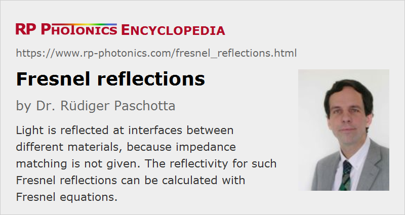

Fresnel Reflections
Definition: light reflections at optical interfaces
German: Fresnel-Reflexionen
How to cite the article; suggest additional literature
Author: Dr. Rüdiger Paschotta
When a light beam (e.g. a laser beam) reaches an interface between two different transparent media, it is partly transmitted into the other medium and partly reflected back into the original medium.
Complete transmission without any reflection would require impedance matching. Essentially all optical materials (except for some photonic metamaterials) have the relative permeability μ = 1, and in that case the impedance depends only on the refractive index. Therefore, the optical reflectivity at such an interface depends only on the refractive indices of the materials, and it vanishes if those indices are identical.
Quantitatively, the reflectivity and transmissivity at such an interface can be calculated with Fresnel equations for an arbitrary angle of incidence. The reflections themselves are called Fresnel reflections.
For the simplest case with normal incidence on the interface, the Fresnel reflectivity can be calculated with the following equation:
Examples for Fresnel Reflections
Fresnel reflections occur in many situations; some examples:
- When a laser beam is sent through an optical window with a single sheet of glass, there are reflections from both sides of the glass. Typical reflectivities of such interfaces (if they are not coated) are a few percent. For non-perpendicular incidence of the beam, one can easily see multiple reflections: primary reflections from the two interfaces, leading to two parallel reflected beams, plus additional week or beams related to multiple reflections of light.
- Fresnel reflections sometimes lead to parasitic lasing, e.g. in fiber amplifiers and slab lasers.
- In light emitting diodes (LEDs), Fresnel reflections make it difficult to efficiently extract the generated light; special LED designs have been developed to overcome that problem.
- Fresnel reflections also occur at the ends of optical fibers. When the ends of two fibers are fitted together (e.g. in a mechanical splice), but with a small air gap in between, there are Fresnel reflections from both sides of the gap. They can largely cancel each other if the width of the gap is far below one optical wavelength, but for larger gap sizes the effective reflectivity can be up to four times that of a single interface due to constructive interference (see Figure 1).
- Dielectric mirrors utilize Fresnel reflections at multiple optical interfaces, often with constructive interference of such reflections.
- Fresnel reflections are essential for the operation principle of birefringent tuners.
- For some fiber lasers, the Fresnel reflection at a fiber end is used for closing the laser resonator. Effectively, such a fiber end serves as an output coupler with a reflectivity of typically somewhat below 4%. The same technique is used for many laser diodes; here, the Fresnel reflectivity is substantially larger due to the high refractive index of the semiconductor material.
Suppression of Fresnel Reflections
In optics and laser technology, Fresnel reflections are often disturbing – particularly when they occur at normal incidence, so that the reflected beam goes back to the source and can have detrimental effects, for example on the operation of a laser. Besides, such reflections can cause unwanted loss of optical power. For such reasons, one often uses measures to more or less suppress Fresnel reflections. The following measures are common:
- One may use anti-reflection coatings. Essentially, with a single or multiple coating layers one creates additional optical interfaces such that the Fresnel reflections from the different interfaces cancel each other by destructive interference. The suppression which is possible in that way is often sufficient to avoid significant losses of optical power, but still often insufficient to avoid detrimental effects of parasitic reflections on laser operation.
- Detrimental effects of parasitic reflections are often avoided simply by avoiding exactly normal incidence, so that any reflected light will be spatially separated from the original beam. For example, laser crystals in bulk lasers are often slightly tilted against the laser beam to avoid exactly normal incidence. Output couplers of lasers are sometimes made with wedged mirror substrates so that parasitic reflections from the backside occur in a slightly different direction. Fiber ends are sometimes cleaved with a substantial angle.
- By using an angle of incidence which is Brewster's angle, one can largely suppress any reflections for p polarization (without using any coatings). For example, many prisms are cut such that one has such angles at both interfaces.
Questions and Comments from Users
Here you can submit questions and comments. As far as they get accepted by the author, they will appear above this paragraph together with the author’s answer. The author will decide on acceptance based on certain criteria. Essentially, the issue must be of sufficiently broad interest.
Please do not enter personal data here; we would otherwise delete it soon. (See also our privacy declaration.) If you wish to receive personal feedback or consultancy from the author, please contact him e.g. via e-mail.
By submitting the information, you give your consent to the potential publication of your inputs on our website according to our rules. (If you later retract your consent, we will delete those inputs.) As your inputs are first reviewed by the author, they may be published with some delay.
See also: Fresnel equations, refractive index, anti-reflection coatings
and other articles in the category general optics
|  |
If you like this page, please share the link with your friends and colleagues, e.g. via social media:
These sharing buttons are implemented in a privacy-friendly way!